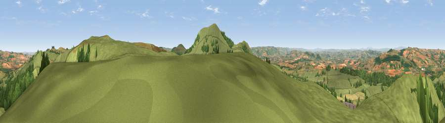

Viewpoint near Priest Weston
#4434 in England · top 14% of its area beats it · near Priest WestonThe view, rendered

A 360° render of this exact spot computed from the terrain model, tree cover and land cover — summer colours, afternoon light, calibrated against photographs of famous viewpoints. Real trees, hedges and buildings will differ in detail.
The panorama
Grey silhouette: terrain skyline in each direction (720 bearings, Earth curvature and refraction included). Dashed green: skyline with trees (+15 m) and buildings (+8 m) as obstacles. Blue strip: how far the ground is visible on each bearing.
Where the view opens
Wedge length = distance to the farthest visible ground on that bearing (vegetation-aware). Rings at 10, 25 and 50 km.
What fills the view
80% grassland · 14% woodland · 6% cropland
Angular shares of the visible panorama (visual magnitude), not map area. Landscape diversity 0.28 (0–1 Shannon).
Key numbers
More beautiful places nearby
The staircase of upgrades: each row has a higher view potential than everything closer. Driving times are estimates from straight-line distance, calibrated against real road routing — check an actual route before setting out.
| Place | Direction | Drive | Score |
|---|---|---|---|
| Stapeley Hill | ENE · 1 km | ~3 min | 74.9 |
| Bromlow Callow | NE · 3 km | ~7 min | 76.8 |
| Viewpoint near Lydham | SE · 6 km | ~12 min | 78.6 |
| Viewpoint near Stiperstones | ENE · 8 km | ~15 min | 82.0 |
| Earl's Hill | ENE · 12 km | ~23 min | 82.2 |
| Viewpoint near Asterton | SE · 14 km | ~25 min | 83.0 |
| Viewpoint near Halfway House | N · 14 km | ~26 min | 83.3 |
| The Lawley | E · 19 km | ~33 min | 85.8 |
52.58343, -3.02902 · source: screening · position refined by local search. Computed location — check access rights before visiting.